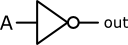
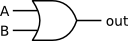
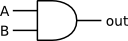
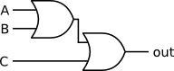
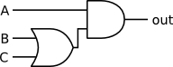
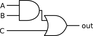

Week 2 notes
- Boolean logic
- named after George Boole (19th-century mathematician and philosopher)
- concerned with truth and application of logical rules
- usually we think of truth values as:
- true or false
- 1 or 0
- yes or no
- on or off
- high voltage or low voltage
- use of logic in game rules
- provides a core of useful operations
- atoms of computing
- Logical operations
- there are only 3 basic operations to remember:
- logical NOT or logic inverter
- drawn: 
- written: !A
- if A is true out is false
- if A is false out is true
- logical OR
- drawn: 
- written: A || B
- out is true if A or B or both are true
- out is false if A and B are both false
- logical AND
- drawn: 
- written: A && B
- out is true if A and B are both true
- out is false if A or B or both are false
- Building
- each of these can be built with transistors
- (or any self switching system eg. relays)
- we don't need special operations for 3 inputs
- chaining operations: 
- we can chain as many as we need
- but, note that order may be important:
- A && B || C is ambiguous
- A && (B || C) 
- (A && B) || C 
- there are 16 possible operations on two inputs
- we can handle extra input with chains
- multiplex MUX
- de-multiplex DMUX
- note the selection outputs from the table
- multiplex 4 channels
- de-multiplex 4 channels
- Exercise
- take a game as a reference
- try to find as many Boolean operations as you can
- write these operations in if () then {} form
- use &&, ||, and ! to join your operations
- example Pong
- remember to log your time
- check in your files before 4pm next Tuesday
{kind=link}
{kind=link}
{kind=link}
{kind=link}